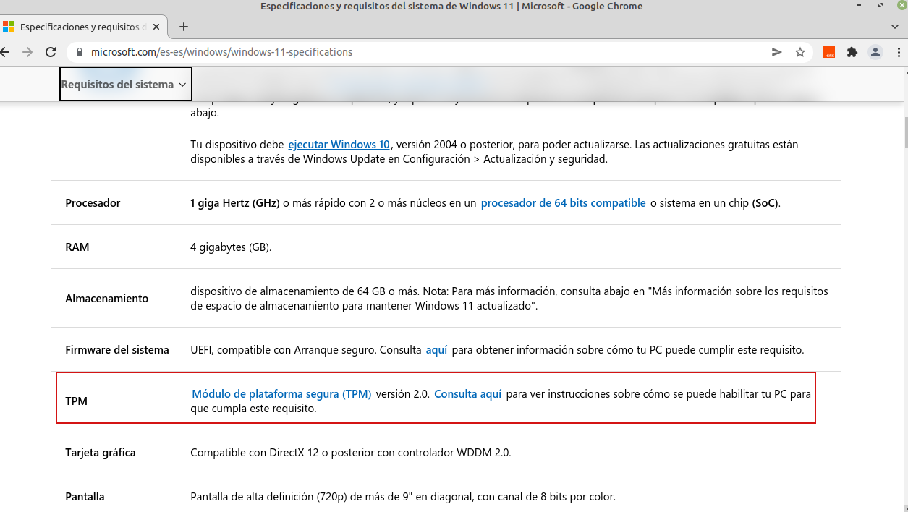

3. Protección del gestor de arranque GRUB
1. Introducción
Un sistema operativo basado en Windows puede parecer muy seguro de por sí, ya que dispone de muchas herramientas como antivirus, Windows Defender u otros sistemas de protección.
Sin embargo, todo este tipo de protecciones funcionan únicamente después de que el sistema operativo haya sido iniciado.
Hoy en día existe Malware capaz de colarse en el equipo antes de iniciar el sistema operativo, pasando totalmente desapercibido.
2. Rootkits
Un rootkit es un paquete de software malicioso (tipo de malware) que se ejecuta en el kernel de nuestro sistema con los mismos permisos que nuestro sistema operativo e inician antes que este, por lo que están totalmente ocultos.
Este malware puede proporcionar acceso y control remotos, saltarse inicios de sesión, compartir archivos de forma no autorizada entre otras cosas.
Los tipos de rootkit más famosos son:
- Rootkits de firmware. Su función es sobreescribir el firmware de nuestro sistema por otro malicioso para que el rootkit se inicie antes que el sistema operativo.
- Rootkits de kernel. Parecido al de firmware, pero este rootkit sobreescribe un trozo del kernel de nuestro sistema para poder iniciar antes de cargarse el sistema operativo de forma automática.
- Rootkits de controlador. Engaña al sistema haciéndose pasar por uno de los contradores del sistema que en teoría debería ser de confianza.
- Bootkits. Funciona de forma similar al de firmaware o el de kernel, pero en este caso reemplaza el GRUB del sistema para indicar que el bootkit se inicie antes del Sistema Operativo.
3. Medidas de seguridad
Las principales medidas para un arranque de forma segura son:
- Arranque seguro: los equipos que dispongan de un firmware UEFI y TPM se pueden configurar para que solamente inicien los sistemas de seguridad que consideren que son de confianza.
- Antimalware de inicio temprano: prueba que todos los controladores existentes sean de confianza y a los que no lo son les impide el arranque.
- Arranque de confianza: el sistema comprueba la integridad de cada componente del arranque antes de cargarse.
- Arranque medido: el firmware se guarda el proceso de arranque del sistema y el propio sistema lo manda a un servidor para valorar el estado actual del equipo.
TPM (Módulo de plataforma de confianza) . Es una tecnología de cifrado de información para usuarios encontrada en un chip.
4. ¿Qué es el TPM y cuál es su función?
TPM son las siglas de Trusted Platform Módule, y es el nombre de una especificación que detalla un criptoprocesador seguro capaz de almacenar claves de cifrado con las que proteger nuestra información.
TPM es un chip físico que se encuentra en las placas base, pero es un chip pasivo que se encuentra desactivado de fábrica y solo si el usuario quiere, puede elegir activarlo, o lo más habitual es que la placa base cuente con un cabezal TPM en el que podremos ponerle un chip comprado aparte (aunque en algunas placas también viene incluido).
La principal función de este chip es proporcionar un lugar físico en el que poder almacenar credenciales, certificados y claves de cifrado que sirven tanto para cifrar otros datos como para almacenar nuestras contraseñas propiamente dichas.
Una de las facultades que hacen a este chip tan seguro es que solo se puede comunicar con el procesador, única y exclusivamente, por lo que ningún otro componente de hardware puede tener acceso a ello sin el permiso del procesador, por decirlo de alguna manera.
El uso de un chip TPM es, por ejemplo, como DRM (protección de derechos de autor para evitar la piratería), cifrado de archivos y carpetas (por ejemplo con el sistema de archivos de cifrado Windows EFS), correo electrónico seguro (el cliente debe admitir características de firma digital, como por ejemplo Outlook), WWW seguro (navegación con SSL) e incluso para otras funciones como redes privadas virtuales (VPN), contraseñas de uso único y autenticación de clientes. Es más, es obligatorio tenerlo si quieres instalar Windows 11 y forma parte de sus requisitos mínimos y el software y el hardware que utilicemos a futuro con nuestros ordenadores también lo exigirán para funcionar.

Figura 1. Requisitos de Windows 11 - TPM v2.0.
4.1. Activar TPM
Generalmente los equipos vienen de fábrica con el chip TPM deshabilitado por lo que en primer lugar, hay que acceder a la BIOS para activarlo.
En este caso de ejemplo, se accede a la BIOS de un equipo portátil Dell Latitude E6430 (ver imagen inferior).
Figura 2. Equipo dell con TPM.
Una vez se accede a la BIOS, establecemos TPM Security para permitir hacer uso del mismo.

Figura 3. Activación de TPM en la BIOS.
A continuación, se describe cómo comprobar que el chip está activo tanto para equipos Linux como Windows.
Para equipos Linux basados en Debian con tpm versión 1.2 hay que instalar los paquetes tpm-tools y trousers. Por otro lado, para equipos con la versión 2.0, hay que instalar el paquete tpm2-tools. En este caso de ejemplo, se instalan los paquetes para la versión 1.2.
jc@jc-Latitude-E6430:/$sudo apt install tpm-tools trousers
Figura 4. Instalación de tpm-tools y trousers.
Una vez instalados los paquetes, ya podremos comprobar el chip tpm con el comando tpm_version:
Figura 5. Comprobación de tpm.
Para sistemas Windows se tiene la consola tpm.msc. Para este caso de ejemplo, dado que el tpm que se dispone es la versión 1.2, no se muestra información ya que esta consola sólo informa de tpm con versiones mayores o igual a 2.0.
PS C:\Windows\system32> tpm.msc
Figura 6. Comprobación de tpm.
Referencias:
5. Protección de Grub
Algunas de las operaciones básicas para securizar un sistema Linux estarán relacionadas con la protección del arranque de cualquier sistema instalado en el equipo, de la ejecución del "modo recuperación" y de la edición de las entradas del grub para, entre otras cosas, evitar que arranquen con permisos de superusuario.
5.1 HASH de la contraseña
Al escribirlo nos pedirá una contraseña, debemos tener en cuenta que la contraseña debe ser robusta para evitar ataques de fuerza bruta. Una vez escrita, nos mostrará una salida como la siguiente:
Para saber más
En el siguiente enlace puedes encontrar más información sobre la protección del GRUB con contraseña:
Obra publicada con Licencia Creative Commons Reconocimiento No comercial Compartir igual 4.0